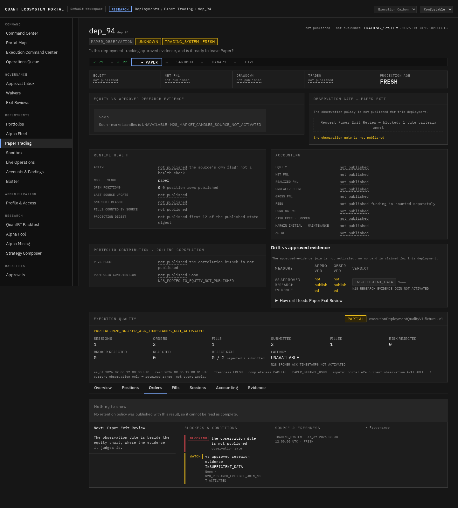

/deployments/paper/:id — preview build, 1440px, BFF-double sample data. Only the header and breadcrumb area (top of the page) changes; everything below it stays as it is. Switch to “What changes” to see the proposal marked against it.Alpha Fleet › BTC-Trend v3 a-7f3a91 › Live · live-0192 1
· reached from Alpha 360 › Deployments. Also under: Core › Binance-02 sleeveyour authorized paths only 2
BTC-Trend v3 · Live deployment
live-0192USDT · real-funded← Back to Alpha 360 · BTC-Trend v3 ?tab=deployments&stage=live&sel=live-0192 (from Account 360 it reads “← Back to Account 360 · Binance-02 sleeve”) 3
- Portfolio
- CoreCore
- Account
- Binance-02 sleeve acct-l-0092Not available to your role
- Stage
- Live · journey strip below
- Alpha
- Open Alpha 360
Runtime
RunningNot available
Since 11 Oct 09:00 · from the runtime recordRuntime source not ready
Data freshness
Stale 14mUnknown
Last event 09:14 · figures below may lag the venueNo as-of time published
Reconciliation
ReconcilingNot available
1 order unknown at venue · Open in OperationsReconciliation source not ready
Three independent facts. 5 This sample is deliberately mixed: a deployment can be running while its data is stale and its books are still reconciling.
Existing detail screen — unchangedIts journey strip R1 → R2 → PAPER → SANDBOX → CANARY → LIVE stays at the top of this block.
Paper · Sandbox · Canary · Live workbench renders here.
Its own tabs (?tab=), actions, blotter and replay links, and layout are kept as they are today. 6
Paper · Sandbox · Canary · Live workbench renders here.
Its own tabs (?tab=), actions, blotter and replay links, and layout are kept as they are today. 6
What changes vs today — Deployment header (Paper / Sandbox / Canary / Live) (/deployments/{paper,sandbox,live}/:id)
| Region | Today (V1, from the screenshot) | Proposed | Why · needs backend | |
|---|---|---|---|---|
| KEPT | Everything below the header | Question line, journey strip R1 → R2 → PAPER → SANDBOX → CANARY → LIVE, KPI tiles, Equity vs approved evidence, Observation gate, Runtime health, Accounting, Drift | Unchanged; same tabs, actions and layout | Guide §9: preserve existing detail screens. |
| KEPT | Stage journey strip | R1 → R2 → PAPER → SANDBOX → CANARY → LIVE with gate ticks, inside the existing screen | Unchanged and not duplicated in the header | Bobby decision 2026-10-17. |
| KEPT | Routes and deep links | /deployments/paper/:id, sandbox, live, canary; ?tab= on Paper | Unchanged; no IDs or paths renamed | Bookmarks keep working. |
| CHANGED | Breadcrumb | In the top bar: Deployments / Paper Trading / dep_94 (ID only) | Alpha Fleet › BTC-Trend v3 (a-7f3a91) › Live · live-0192, with “Also under” parents; reached only via Alpha 360 or Account 360 | Names are for reading, IDs for routing. |
| CHANGED | Page title | “dep_94” with “dep_94” again beside it | “BTC-Trend v3 · Live deployment” plus the ID chip | Needs alpha name and version on the deployment response. |
| NEW | Back to results | None visible | “← Back to Alpha 360” (or Account 360) with the preserved tab and selection | Guide §15: no lost row context. Managers do not enter from Overview. |
| CHANGED | Context row | No portfolio or account in the header | Portfolio and account links; stage shown as text, the existing journey strip is kept | Needs account and portfolio references on the detail response. |
| CHANGED | State chips | PAPER_OBSERVATION, UNKNOWN, “TRADING_SYSTEM · FRESH” — not labelled by what they measure | Three labelled boxes: Runtime, Data freshness, Reconciliation, each with as-of and reason | Three independent facts; no combined health. |
| NEW | Sticky one-line header | Header scrolls away | One line with the three chips and a Results link | — |